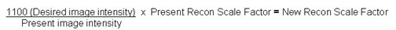

Operating Documentation
Direction 5440001-3, Rev# 6
Signa HDxt Service Methods
Module Version 1.0, Version Date 4/25/07
Operating Documentation |
Image intensity is generally not uniform from system to system, due to variations in the RF cable losses, preamplifier gain/noise, receiver gain/noise, RF coils, and other factors. Furthermore, image intensity is dependent upon the phantom and pulse sequences used. Window and level controls are manually adjusted for the desired image intensity. To provide automatic uniform image intensity from system to system, perform the System Gain Calibration procedure. Doing so does not affect the system SNR.
The Recon Scale Factors are calculated with the System Gain Calibration tool, then the new values are automatically set by the tool. This is done in software by changing the Recon Scale Factors based on the result of the ratio shown below:

System Gain Calibration Consists of the Following:
Both Head and Body calibrations can be run at the same time. This is the preferred method. Otherwise, run individual modes as listed in the next two options.